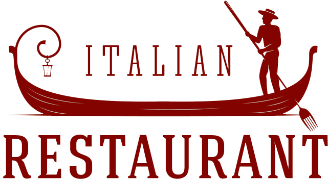

§
Trattoria del Cuore
Välkommen till vår italienska restaurang!
Njut av en autentisk upplevelse med smakrik mat och en mysig atmosfär.
Boka BordVår Meny
Saltimbocca på kyckling
Klassisk italiensk maträtt med ursprung från staden Brescia i norra Italien. Alla familjer har sin variant på populära maträtten. Denna variant gjord på kyckling smaksatt med färsk salvia och vitt vin.
Margherita
En klassisk pizza med krispig botten, färska tomater, buffelmozzarella och basilika, bakad till gyllenbrun perfektion.